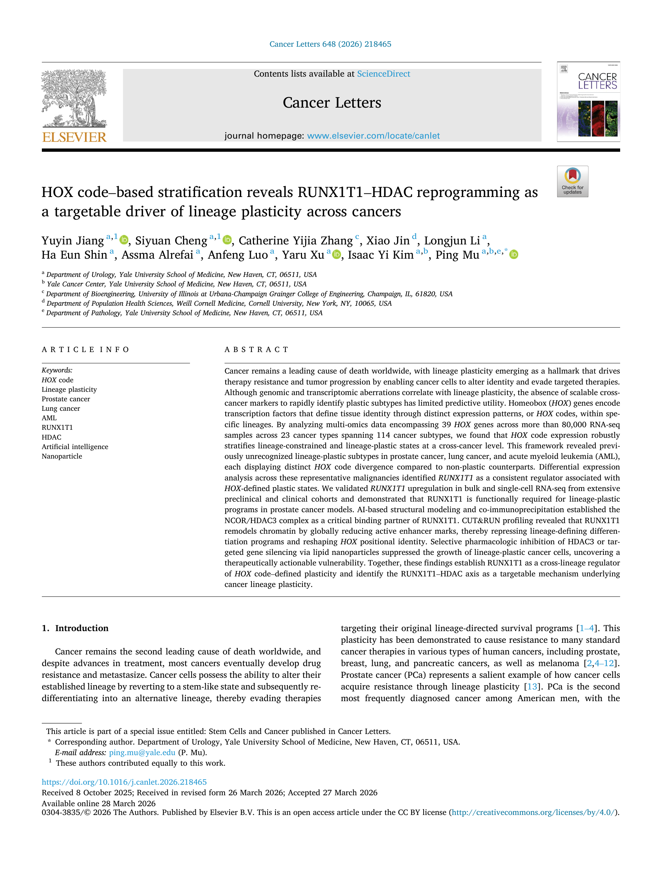
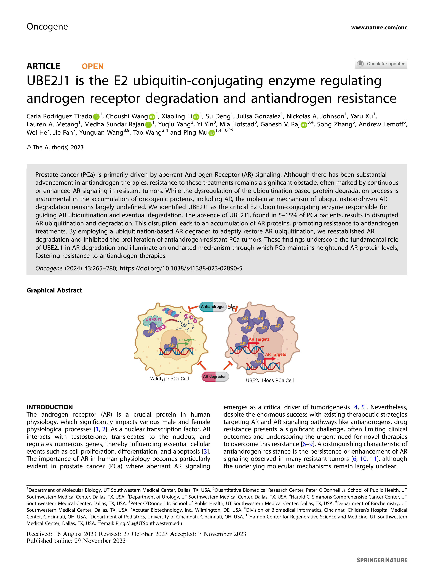
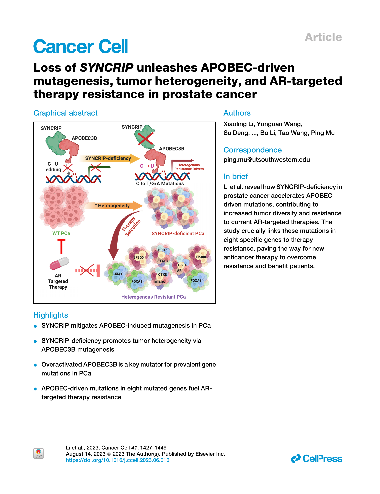
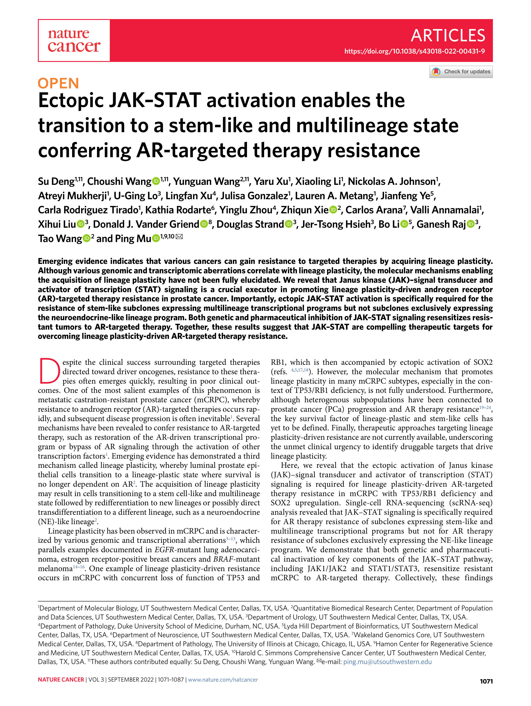
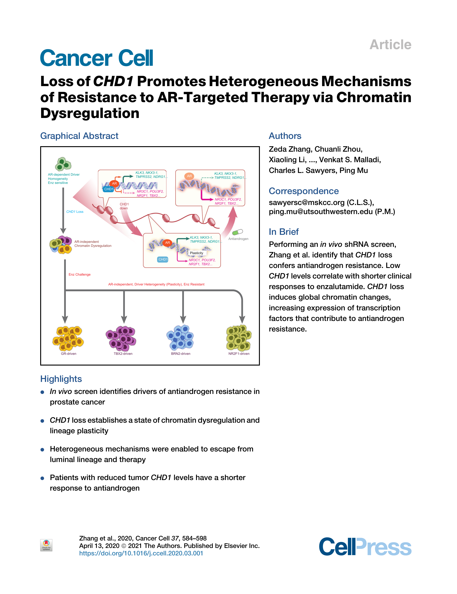
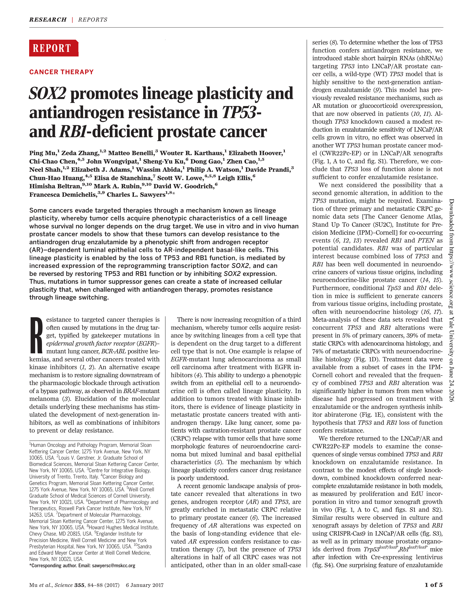

Mu Lab / Publications
Publications
Featured Papers

Cancer Letters · 2026
Cancer Letters · 2026
HOX-code plasticity: the RUNX1T1–HDAC axis
Read the story →

Cancer Discovery · 2024
Cancer Discovery · 2024
ZNF397 loss triggers TET2-driven lineage plasticity
Read the story →

Oncogene · 2024
Oncogene · 2024
UBE2J1 governs androgen receptor degradation
Read the story →

Cancer Cell · 2023
Cancer Cell · 2023
SYNCRIP restrains APOBEC-driven mutagenesis
Read the story →

Nature Cancer · 2022
Nature Cancer · 2022
Ectopic JAK–STAT activation drives a stem-like, therapy-resistant state
Read the story →

Cancer Cell · 2020
Cancer Cell · 2020
CHD1 loss reshapes the chromatin landscape
Read the story →

Science · 2017
Science · 2017
SOX2 drives lineage plasticity & antiandrogen resistance
Read the story →